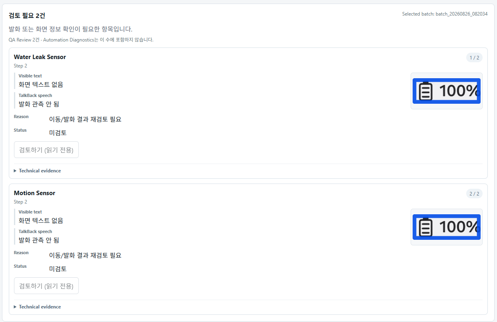

제품 접근성 검토 항목
qa_accessibility signal은 화면 정보와 TalkBack 발화, 포커스·증거를 사람이 확인해야 하는 대상입니다. Review Required의 QA Review 항목 수에 포함됩니다.
대시보드 03 · 검토 범위
자동화의 제한과 제품 접근성 검토 항목을 섞지 않습니다. 같은 실행에서 보여도 담당 영역과 다음 조사 방법이 다를 수 있습니다.

신호를 나누어 보기
qa_accessibility signal은 화면 정보와 TalkBack 발화, 포커스·증거를 사람이 확인해야 하는 대상입니다. Review Required의 QA Review 항목 수에 포함됩니다.
automation_engine signal은 순회, 복구, 결과물, 실행 환경 또는 엔진을 조사할 대상입니다. QA 접근성 결함으로 자동 승격하지 않습니다.
현재 근거가 오래되었거나 특정 테스트 묶음(corpus)이 부족하다는 표시만으로 제품 접근성 FAIL을 선언하지 않습니다. 새 실행, 재현 또는 검토자 결정이 필요한 상태와 실제 접근성 결함은 각각의 증거로 판단합니다.